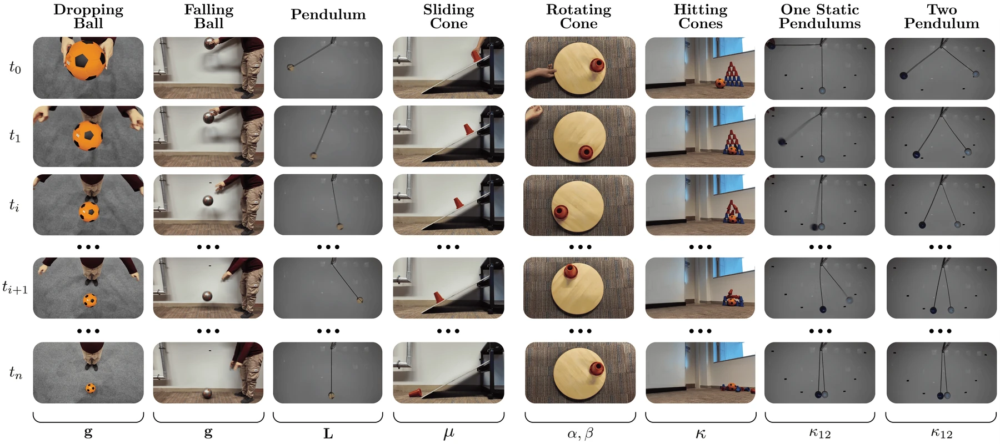

IRIS: A Real-World Benchmark for Inverse Recovery and Identification of Physical Dynamic Systems from Monocular Video
- PaperIRIS: A Real-World Benchmark for Inverse Recovery and Identification of Physical Dynamic Systems from Monocular Video
- AuthorsRasul Khanbayov, Mohamed Rayan Barhdadi, Erchin Serpedin, Hasan Kurban
- FromHamad Bin Khalifa University, Texas A&M University
- arXivarXiv:2603.16432 (cs.CV), March 2026; ECCV 2026
- LinksProject page · Code · Data
Methods that estimate physical parameters from video without supervision had no common benchmark. They were evaluated on different synthetic data; the only real dataset had single bodies only; and no protocol tested whether a method finds the right governing equation. IRIS fills this gap with real videos, each paired with its governing equations and with parameters measured independently, with their uncertainty.


The task
Given the frames of one video from one camera, a method must identify the governing dynamical system from a bank of candidate ordinary differential equations, and estimate its physical parameters, with no labels and no metadata. For several bodies, their number is given by the set-up.
The data
240 videos at 4K and 60 fps, recorded under controlled lighting with a fixed camera, ten takes per setting. Five phenomena have one body: a ball dropped from 50, 100 or 150 cm; a ball filmed from above as it falls (three sizes); a cone sliding down a ramp at 45°, 60° or 80°; a damped pendulum released at 20°, 45° or 90°; and a cone on a rotating support at three speeds. Three have several bodies: a ball launched into a pyramid of 15 cones, and two set-ups of colliding pendulums. The resolution has a purpose: a 4 cm ball 1.5 m away spans about 3 pixels at 1080p but about 12 at 4K, which makes the metric scale much more reliable.
How it is scored
The protocol covers parameter accuracy (mean absolute error against the measured values), identifiability, extrapolation beyond the frames used for fitting, robustness, and the choice of governing equation.
What the paper found
The baselines include a latent-space physics model, a variant trained with a multi-step loss, and four ways to pick the equation: a vision-language model reasoning over time, a describe-then-classify prompt, a CNN classifier and a path-based rule. Picking the equation is a bottleneck: vision-language models reach 65–73% on IRIS, and the CNN is nearly perfect on the data it was trained on but must be retrained for new data. The multi-step loss fails badly with several bodies: on the two moving pendulums, length errors exceed 100 m, against 1.1–3.0 m for the one-step baseline. Damping is poorly identifiable for every baseline, and converting latent units to SI units depends on the phenomenon.
Run it in Real2SimLab
Real2SimLab adapts one phenomenon, the dropping ball (three heights), and asks a different question: can a method deliver a program that simulates the drop it sees? IRIS publishes no trajectories, so the Lab extracts them from the videos (the ball's position and size in each frame, back-projected and calibrated per take), and checks them with gravity, which the extraction does not use: the median is 9.97 m/s² at the lowest height. Each task shows the first 1.2 s of take 01; the program is scored against take 01's trajectory with the Lab's reproduction metrics, and the other takes of the same height give the noise floor. The videos are licensed CC BY-NC 4.0 (non-commercial): they are downloaded into your cache and never redistributed.
pip install -e ".[iris]"
r2s bench build iris --out tasks/
r2s eval --tasks tasks/dropping_ball --method static --method constant_velocity \
--method hand-written=program:path=examples/twins/iris --out runs/irisMore in the documentation.